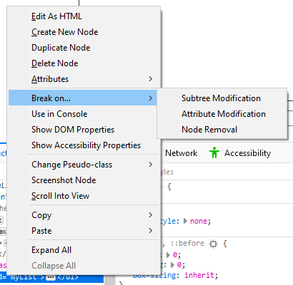
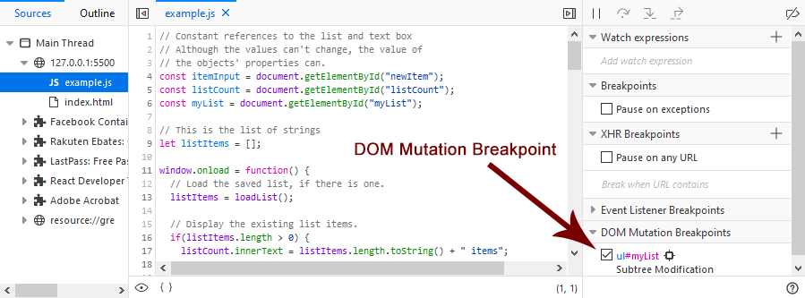
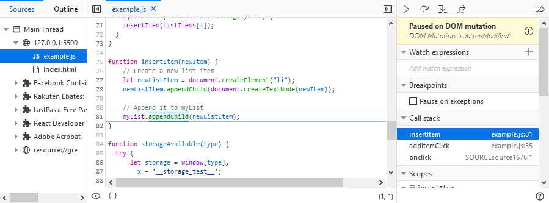

{{ToolsSidebar}}
A DOM Mutation Breakpoint pauses the code when the DOM node on which you have set the breakpoint is modified.
You set a DOM Mutation Breakpoint in the Page Inspector. Navigate to the DOM node in which you are interested and use the context menu to set the breakpoint.

There are three choices:
Element.classList.add(), or setting {{domxref("Element.id")}}.Once you set the breakpoint, go to the Debugger. You can see the breakpoint listed in the right-most panel under DOM Mutation Breakpoints.

Click on the icon following the node name to go back to the Page Inspector with the node selected.
When you execute the code, the debugger will pause execution when the DOM mutation occurs. In the following example, the selected node (the unordered list) is modified by adding a new child node.

The panel on the right shows that execution is "Paused on DOM mutation" and you, as with any other breakpoint, you can see the call stack and view any Watch expressions you may have set up.
New in Firefox 71, the source pane now gives you an instant preview of the variables on each line of code you've stepped through. See Set a breakpoint > Inline variable preview for more information.